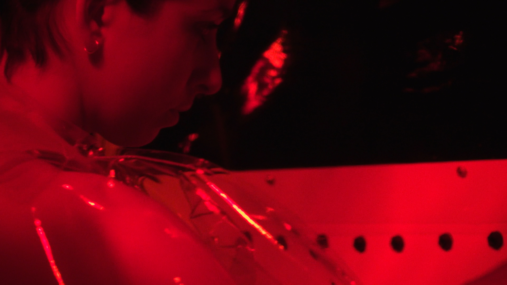
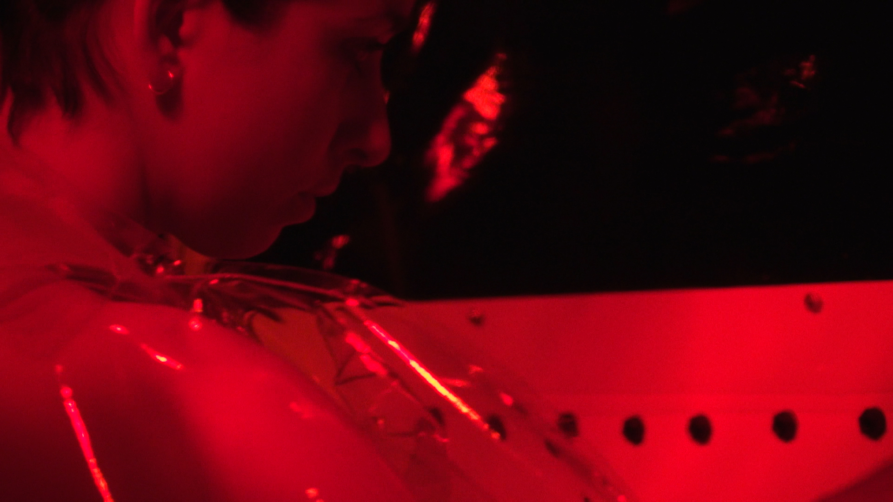
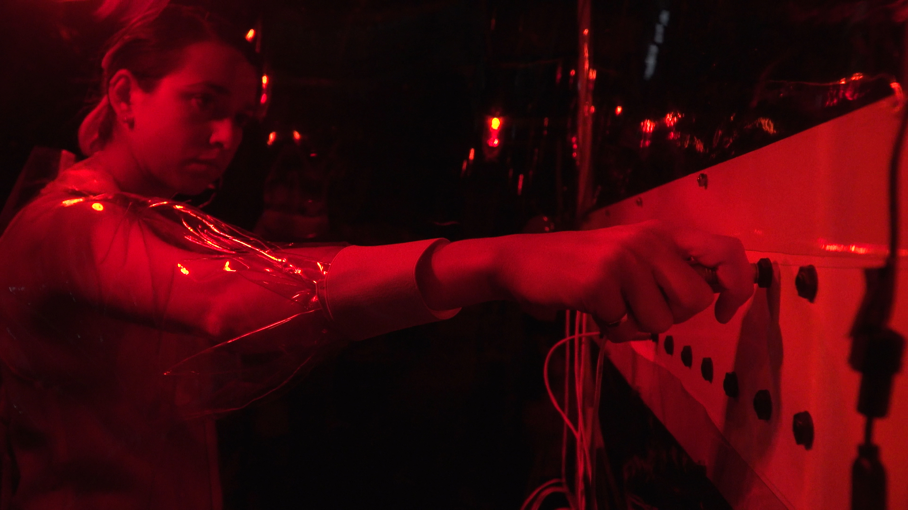
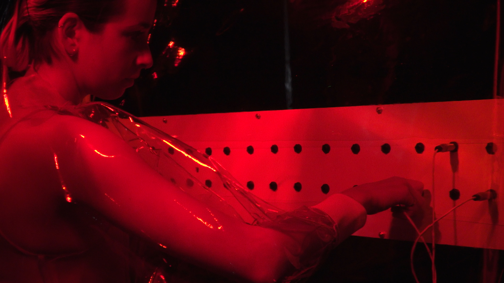
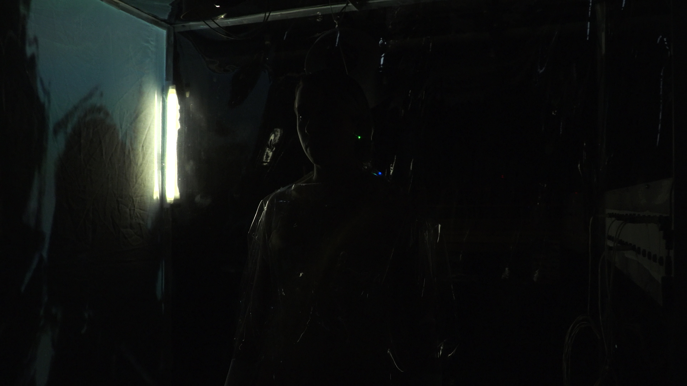
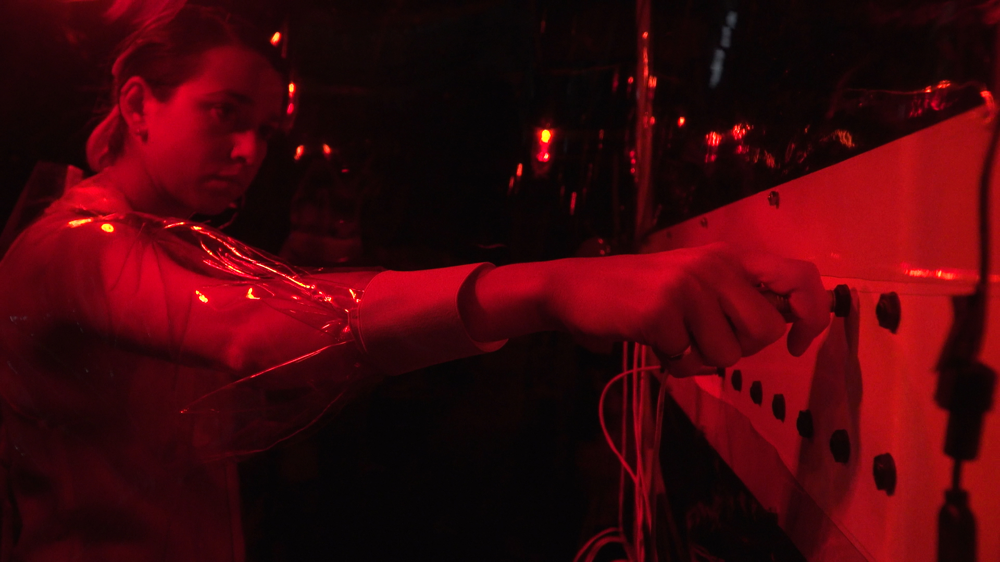
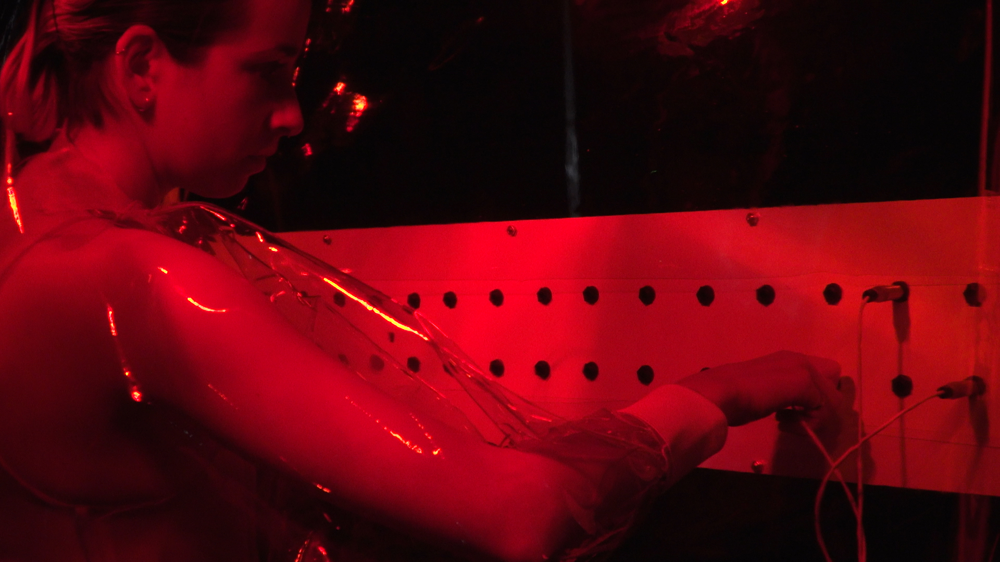
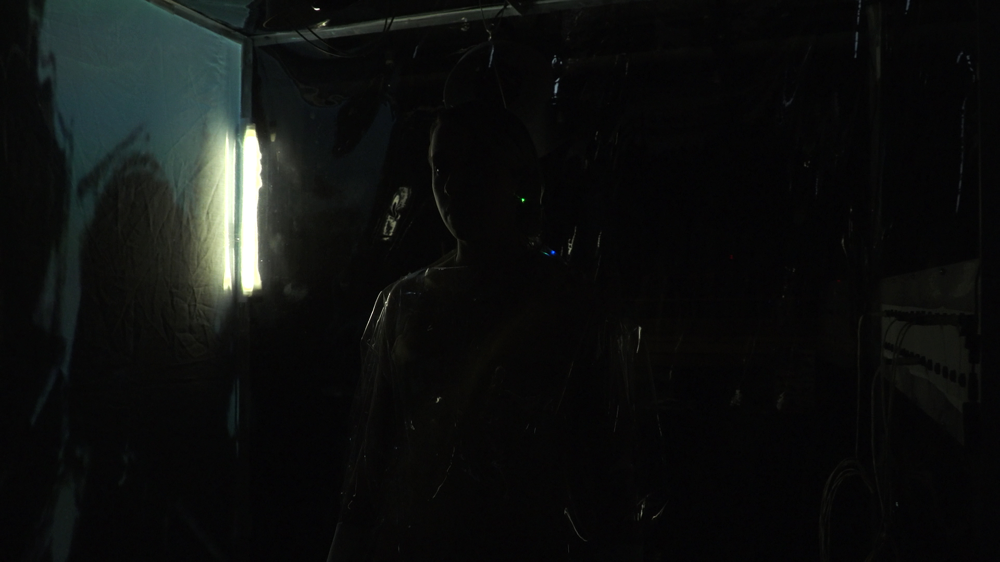

MULTIPLEXER, Installation Documentation, 2019
In this durational piece, the body acts on and is acted upon by its environment. From within a human-scale structure—a hybrid between a server farm and a greenhouse— the primary action is the performer’s control of the lighting and sound through the use of a custom multiplexer panel. Meanwhile, infrared lamps inject heat into the system, acting as concrete metaphors for the thermal exhaust generated by intense data computations. In this way, the performance investigates the impact of heat on a biomechanical system. This individual, confined, labors endlessly within a network.
Changes in the performer’s body state are monitored and mediated in real time. Their heartbeat and body temperature have direct effects on the real-time video, projecting images of the body and its sweat onto the back wall of the structure; quantifying the performer’s exhaustion. Within this arrangement of perpetual thermal exchange, the performer’s energy is extracted and injected into the system.
Heat as a medium has theoretical, political, material and environmental implications. In thermodynamics, heat reveals the qualitative aspect of molecules energy in matter. But heat is often considered as the undesired waste generated by a system. Heat is now controversial.
Within this framework, MULTIPLEXER establishes a speculative context that challenges human digital behaviors and their collateral effects on the biological and geological. Taking place in a fictional future where individuals and machines are mutually dependent parts of closed systems, this piece examines the inherent exhaustion of such arrangements.
For more info about MULTIPLEXER, click HERE
 



 





a Collaboration between
Sam Bourgault
Emma Forgues
Matthew Halpenny
Matthew Salaciak
Owen Coolidge
Jeremy Segal